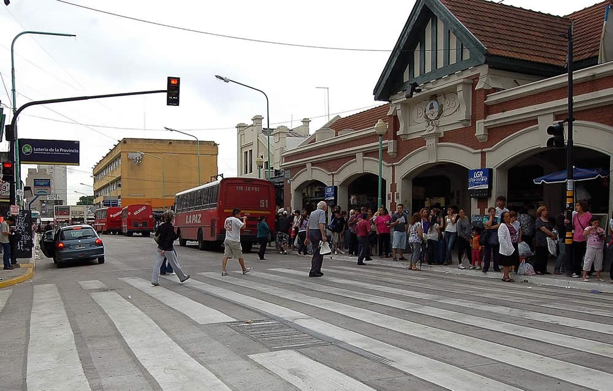
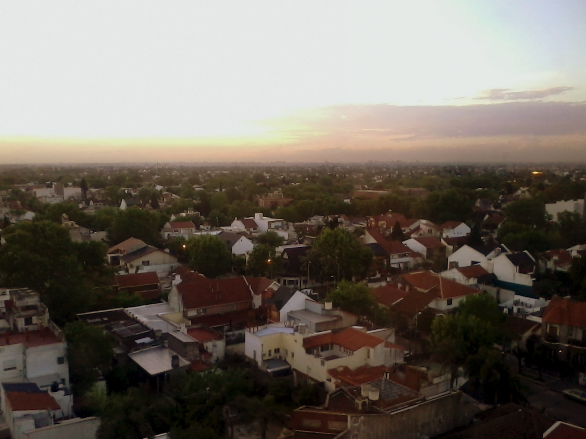

Historia
El partido de Lomas de Zamora fue fundado en el año 1861. Se encuentra al sur del conurbano Bonaerense y esta confomado por las localidades de Lomas de Zamora, Banfield, Temperley, Lavallol, Turdera, Villa Centenario, Villa Fiorito, Ingeniero Budge, Villa Albertina y San Jose.
Click para mas información 